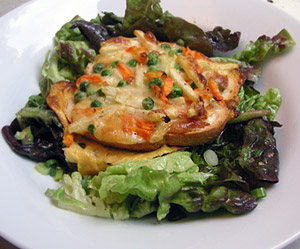

Gemüse-Käse-Schnitten
4,5 von 6Karotten, Kohlrabi und gefrorene Erbsen kurz andämpfen. je 150 g Tilsiter und Appenzellerkäse mit der Röstiraffel raffeln und dazu geben. 2 Eier sowie einen Schluck Weisswein beigeben, mit Salz, Peffer und Paprika würzen. Bei 200 g überbacken bis der Käse schön geschmolzen ist. Auf einem Salatbouquet servieren.
